Trauen Bank: Multi-device UI Design
Multi-device banking interface designed for mobile, tablet, and desktop.
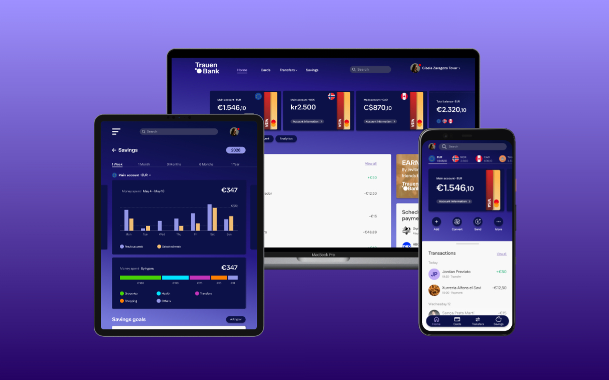
Overview
This project explores the design of a multi-device banking interface, focusing on creating a consistent user experience across mobile, tablet, and desktop.
The objective was to design an interface that feels clear, trustworthy, and approachable, while adapting seamlessly to different screen sizes and interaction patterns.
Special attention was given to building a scalable system, ensuring that layout, components, and visual language remain consistent across all platforms.
Problem & Goals
Designing a banking application across multiple devices presents several challenges, including maintaining consistency, adapting layouts to different screen sizes, and ensuring clarity when displaying complex financial information.
The goal of this project was to create a unified interface that allows users to easily access and manage their finances regardless of the device they are using.
Key objectives included improving readability, establishing a clear visual hierarchy, and designing interactions that feel intuitive, efficient, and reliable.
Process
Moodboard
The three core values defined for the app were "clear", "playful", and "trustworthy." For this reason, I created a separate mood board for each of these values to represent and visualize them individually.
Thanks to this first step, I began commenting and adding notes about some of the visible elements in the mood boards and understanding how I could reflect each of the required values.
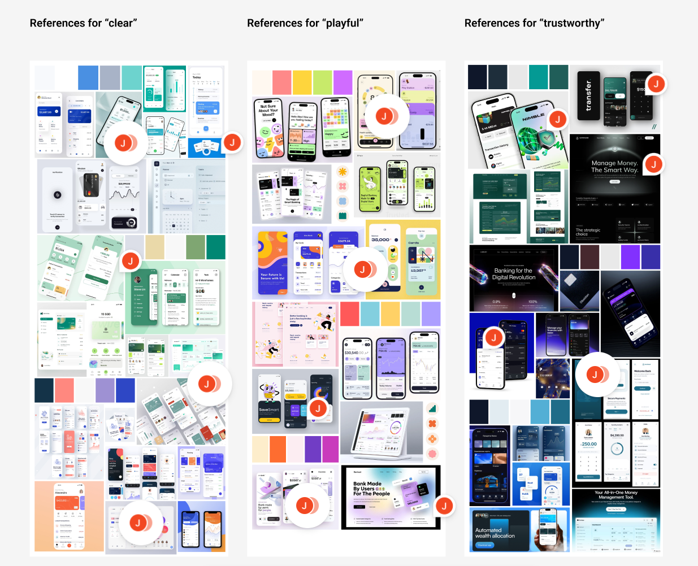
Grid System
I chose a 4-column layout for the mobile version, 5 columns for the tablet version, and 12 columns for the desktop version.
I ensured that the margins and gutters were always multiples of 8, and the grid size I placed in the background was 8.
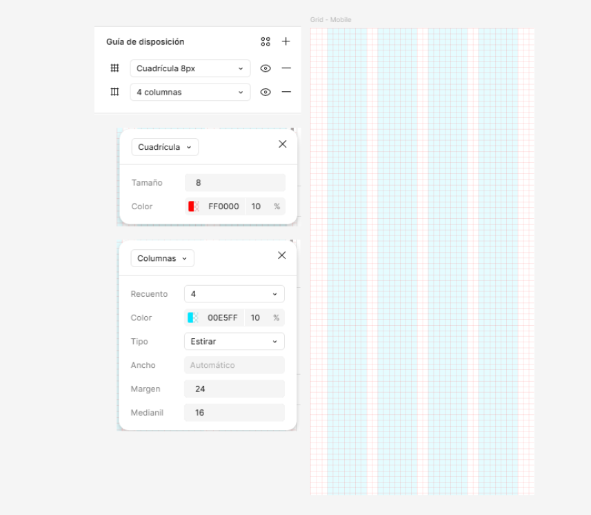
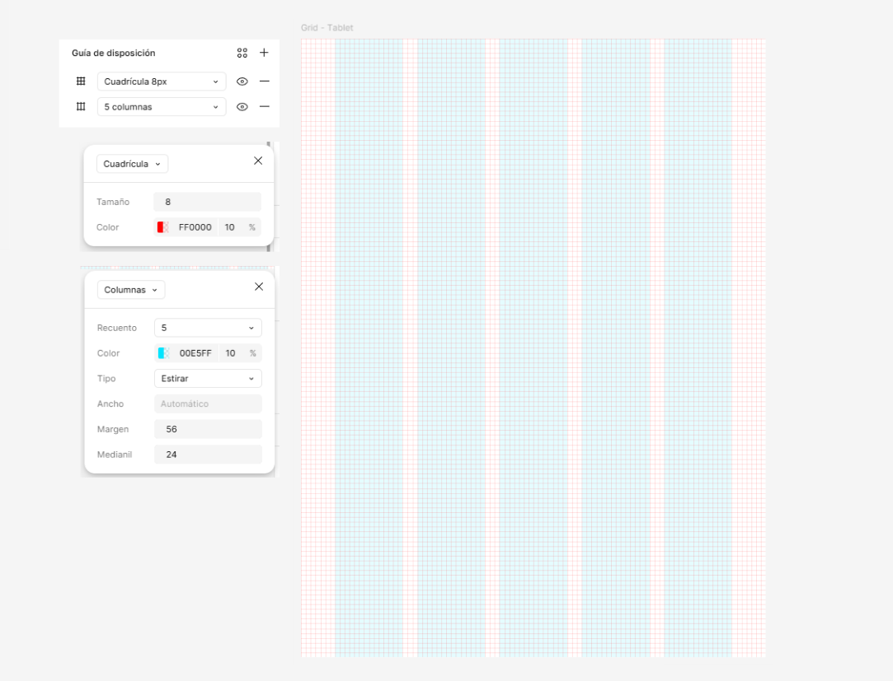
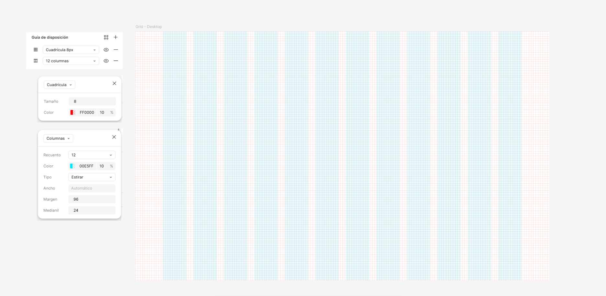
Component Library
A component library was created to ensure consistency across all screens and devices. Core elements such as buttons, cards, navigation bars, and input fields were designed with different states (default, hover, active, disabled).
This system helped maintain visual coherence while also speeding up the design process and making the interface more scalable.
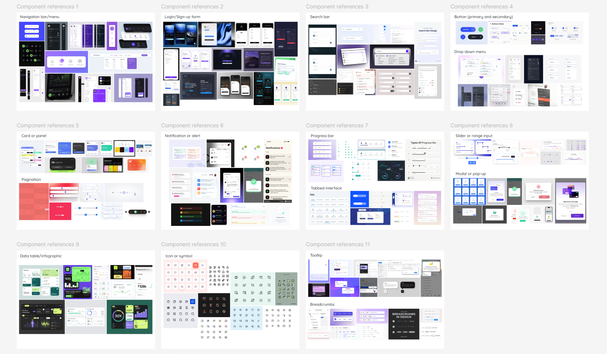
Typographies
First of all, I gathered typography references before searching for and choosing a typeface I considered suitable.
From the beginning, I knew that the typefaces I would choose for this project would be sans-serif. One would be serious, and the other with a more humanistic touch, for the simple reason that they were the ones that best reflected the values I was looking for from the start.
Based on the selected references, I began searching for the typefaces for this project.
While the TASA Orbiter typeface was ideal for titles and provided a serious tone, the Fustat typeface was ideal for creating most of the written content and giving a more familiar and approachable feel.
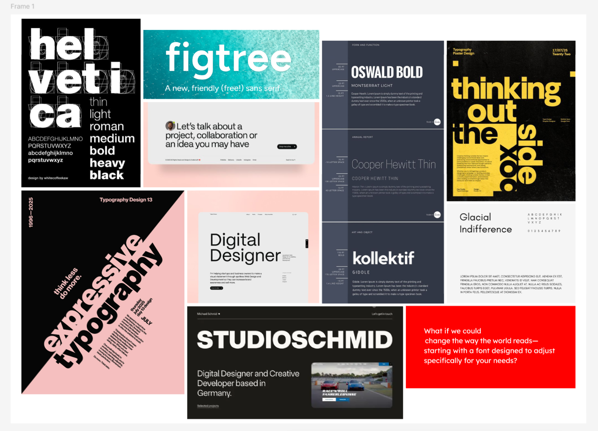
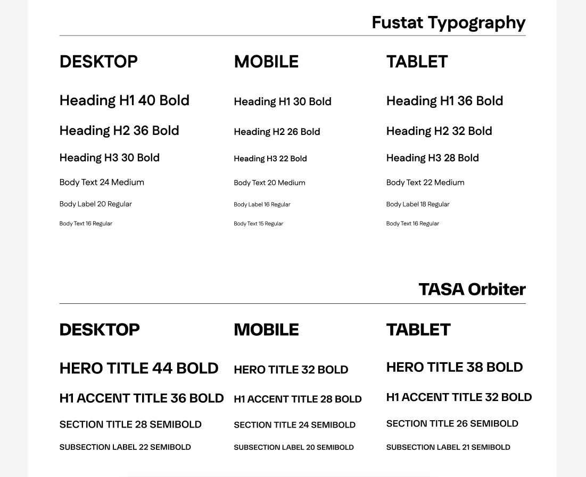
Color Palette
The color palette was designed to balance trust, clarity, and a distinctive visual identity. Deep blue and indigo tones form the foundation of the interface, creating a sense of reliability and structure while supporting a consistent experience across devices.
Lighter surfaces were introduced to separate content areas and improve readability, helping users quickly scan and understand financial information.
A warm yellow accent is used selectively to highlight key elements such as actions, promotions, or important information. Its limited use ensures it draws attention effectively without overwhelming the interface.
The palette was also adjusted to maintain sufficient contrast between elements, ensuring readability and accessibility across different contexts.
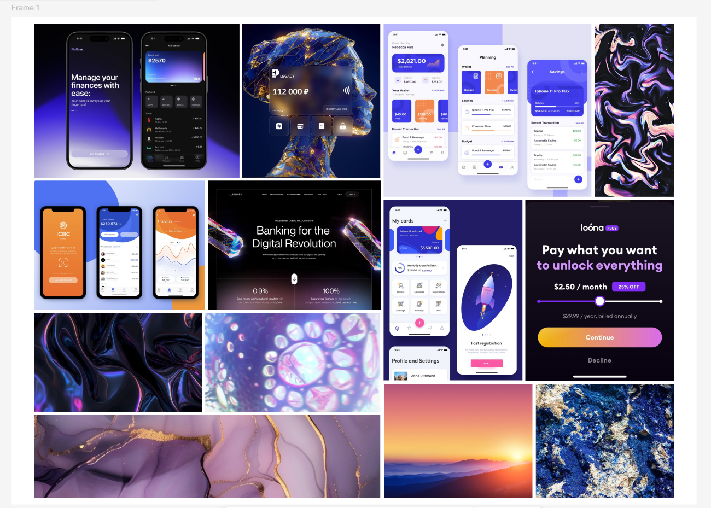
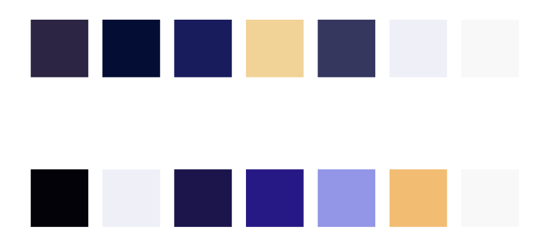
Iconography
The iconography follows a clean and minimal style to ensure clarity and immediate recognition. Icons were selected and refined to support navigation and key actions without adding unnecessary visual noise.
Consistency in stroke, size, and style was essential to maintain a cohesive interface across all devices.
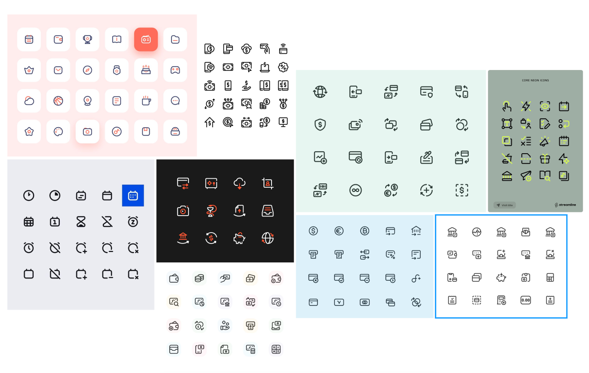
Screen Design - Iterations
Different layout and interaction solutions were explored through multiple iterations. Early versions focused on structure and information hierarchy, while later iterations refined usability and visual clarity.
This iterative process allowed me to identify what worked best in terms of navigation, spacing, and content organization across different screen sizes.
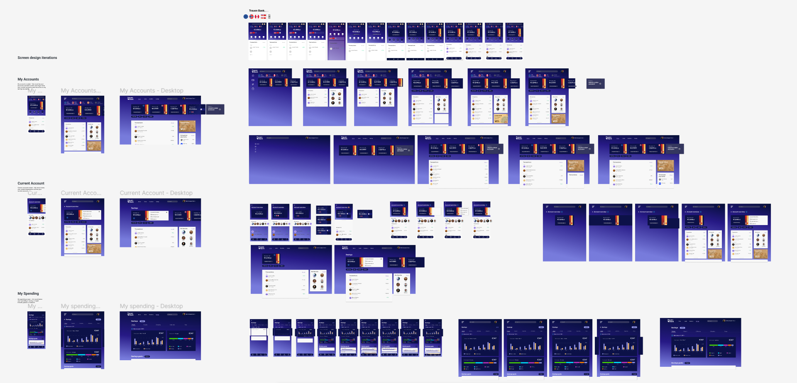
Final Outcome
You can access the Figma prototype here: Multi-device Bank App
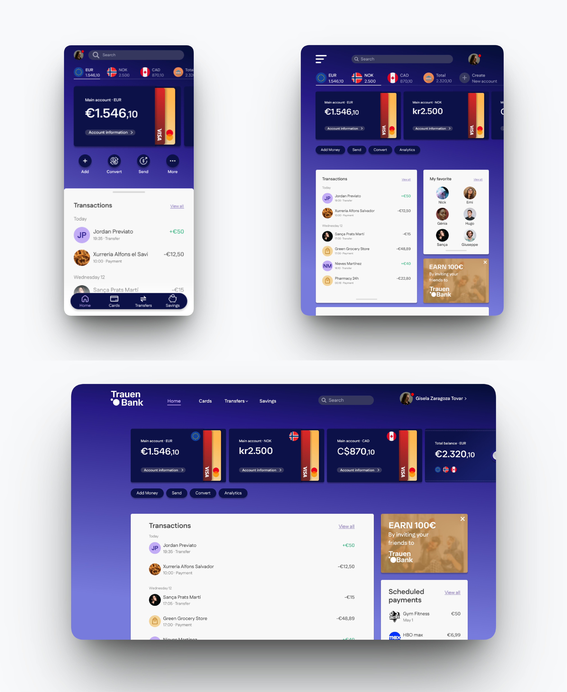
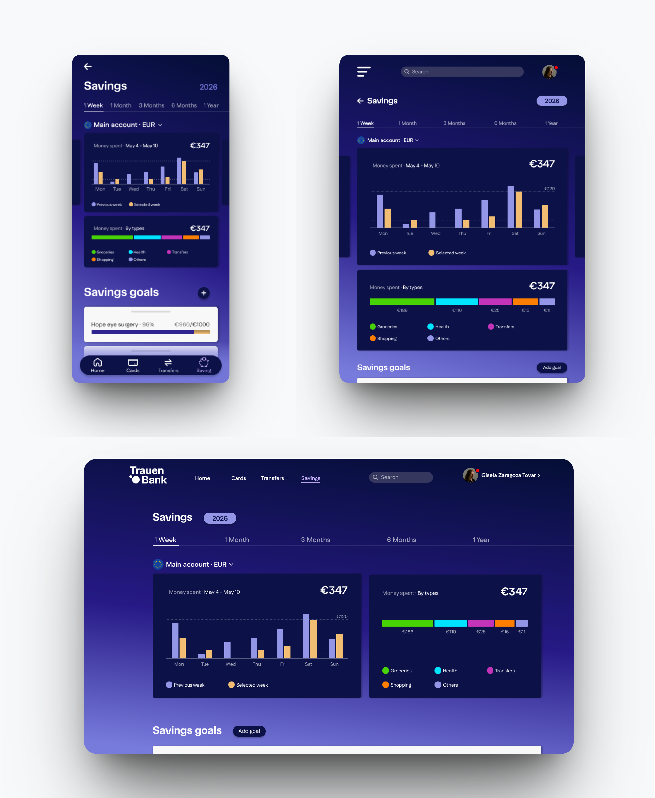
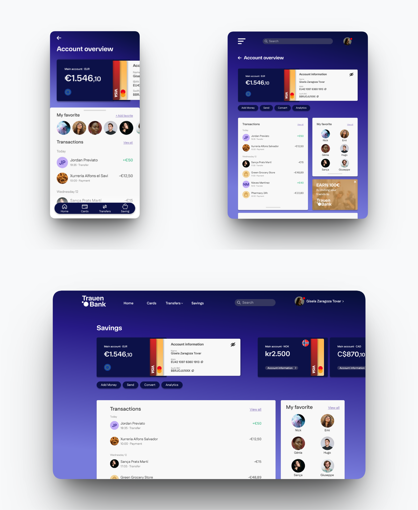
The final result is a consistent and scalable multi-device interface that adapts seamlessly across mobile, tablet, and desktop.
The design prioritizes clarity, accessibility, and ease of navigation, allowing users to manage their finances efficiently while maintaining a sense of trust and control.
All elements work together to create a cohesive and user-friendly experience.
Reflection
This project helped me better understand how to design scalable interfaces across multiple devices while maintaining consistency.
One of the main challenges was adapting layouts to different screen sizes without losing clarity or hierarchy.
If I were to continue this project, I would conduct usability testing to validate design decisions and further refine the interaction flows.